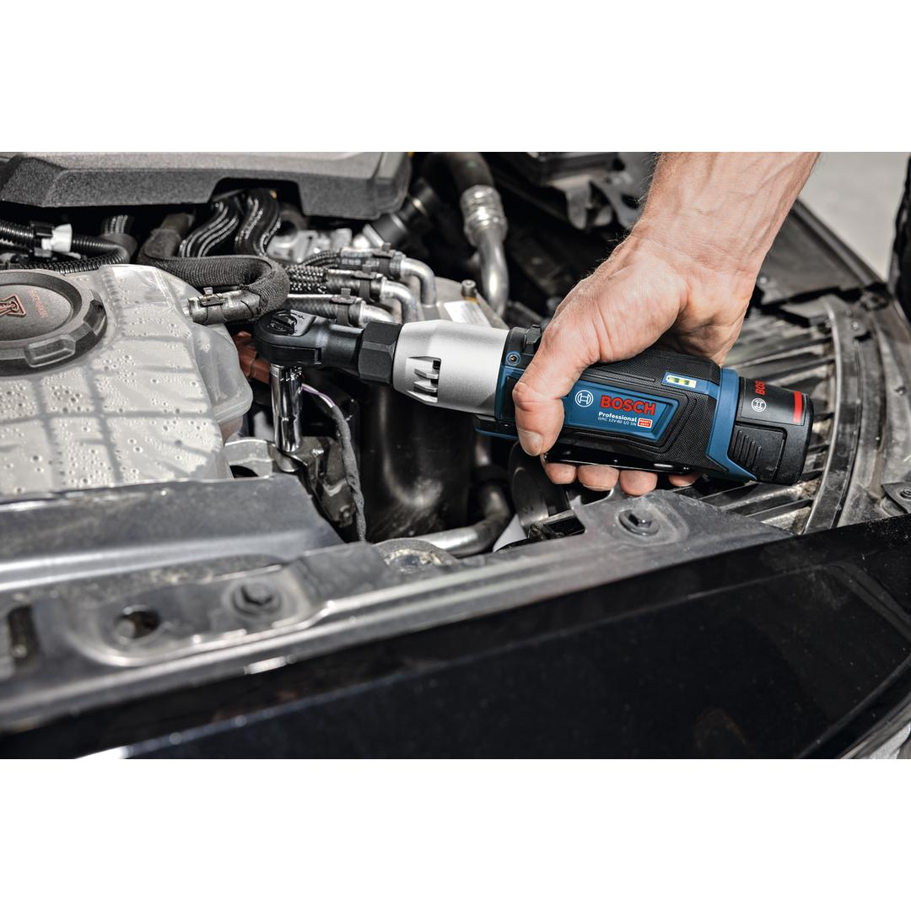
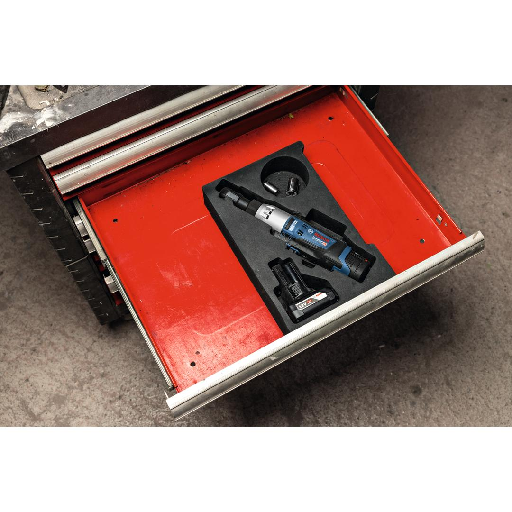
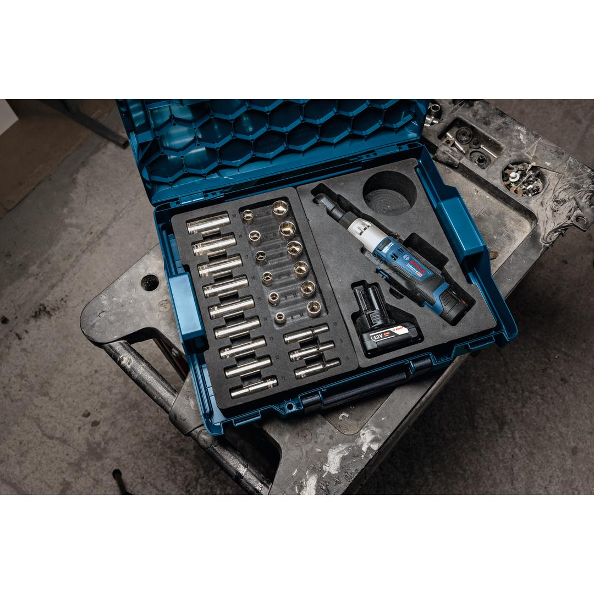
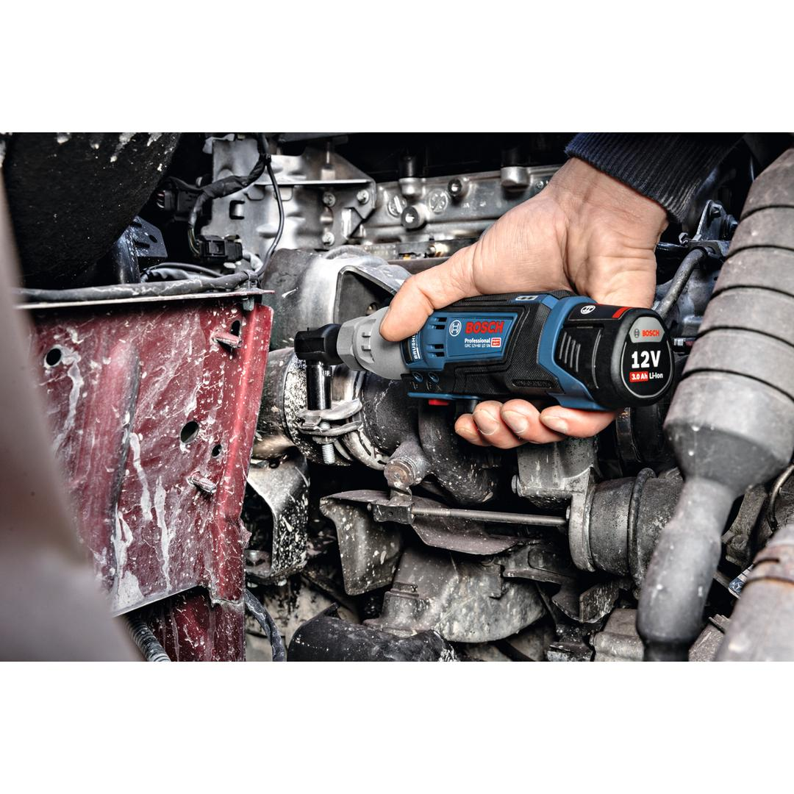
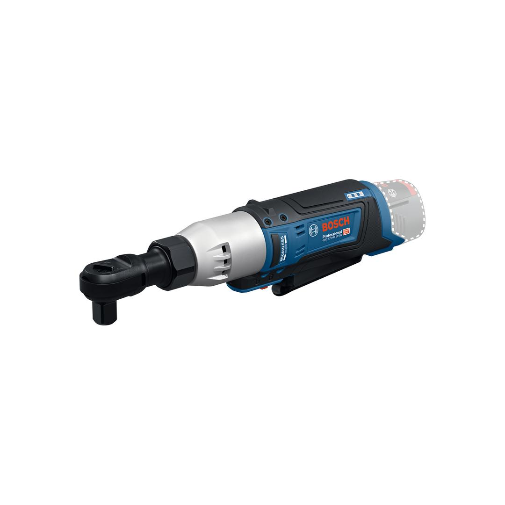

06019N8500





| Noise level |
The A-rated noise level of the power tool is typically as follows: Sound pressure level 83 dB(A); Sound power level 91 dB(A). Uncertainty K= 3 dB. |
| Tool dimensions (width) |
52 mm |
| Tool dimensions (length) |
269 mm |
| Tool dimensions (height) |
73 mm |
| Torque, max. (hard screwdriving applications) |
60 Nm |
| Battery voltage |
12.0 V |
| Weight incl. battery |
1.16 kg |
| Weight excl. battery |
0.78 kg |
| Torque, max. |
60 Nm |
| Bold size |
M 5 - M 12 |
| BITURBO |
No |
Compact ratchet wrench handles screws in tight spaces with ease
Outstanding tool control and comfortable grip thanks to ergonomic design and small circumference Compact and convenient with lean 12 V system for accessing tight spaces and LED light to illuminate dark areas Efficient, intuitive operation thanks to variable speed trigger Robust and durable thanks to metal housing
Bosch’s GRC 12V-60 1/2 SN ratchet wrench offers outstanding control and is comfortable to grip thanks to its ergonomic design and slimmer circumference. It is ideal for working in tight spaces with its compact 12V system. Convenient and intuitive to operate, this ratchet wrench has a variable speed trigger for easy adjustment and an LED light so you can see clearly, even when you’re working in dark corners. What’s more, the GRC 12V-60 1/2 SN is powerful and efficient thanks to its high torque.
The GRC 12V-60 1/2 SN ratchet wrench is for loosening and tightening fasteners in confined spaces. It is compatible with all 12V Bosch Professional batteries.
The GRC 12V-60 1/2 SN features a 1/2” interface, a 79 mm head length, special ribs for stable parking and a lock-off button